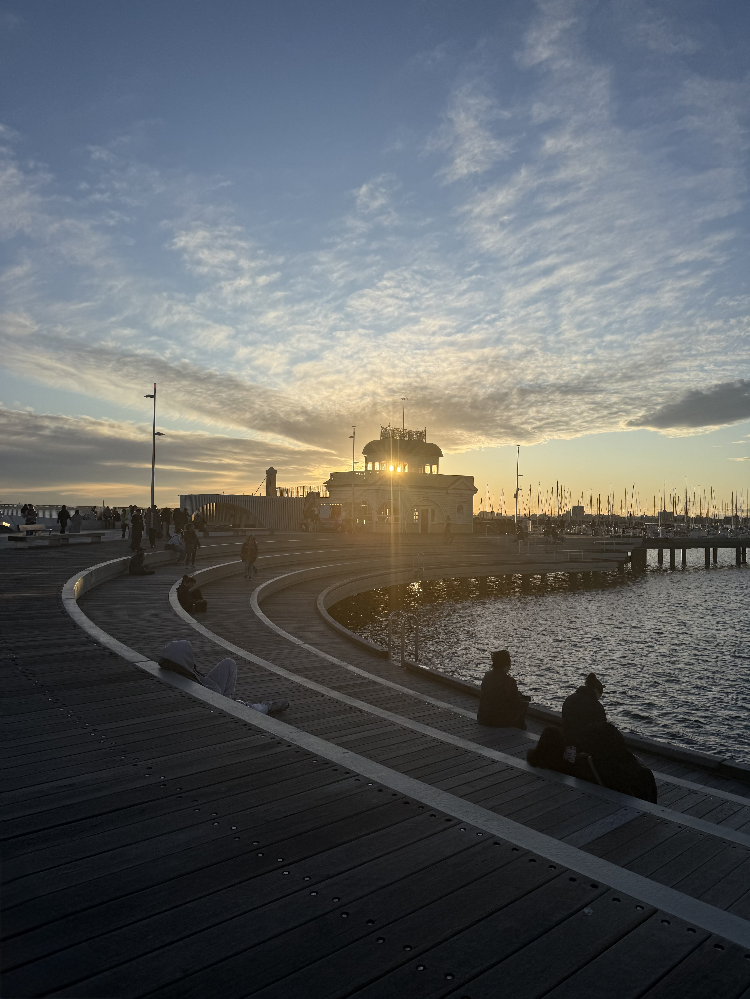
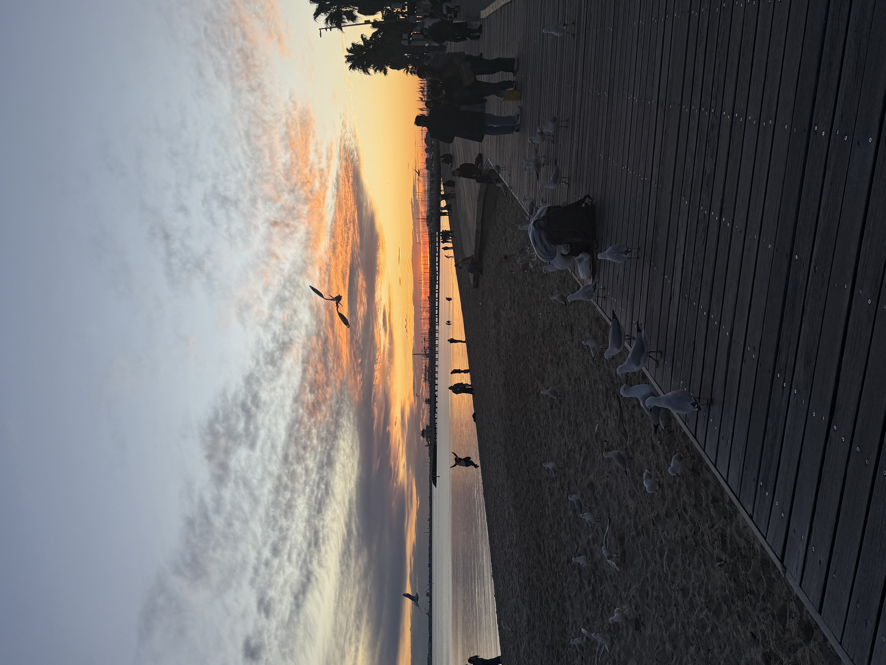

Hello! I'm Shashiwadana Nirmani
I am a PhD researcher in Software Engineering at Deakin University, Australia, with research interests in open source software (OSS) ecosystems, empirical software engineering , and human-centered software engineering. My research explores how human factors influence participation in OSS projects. By integrating behavioural and social factors into OSS project recommendation systems, I aim to develop more personalized, human-aware approaches that better support software practitioners than traditional recommendation techniques based solely on technical characteristics.
Prior to commencing my PhD, I worked as a Software Engineer, gaining over two years of industry experience developing software solutions in Agile environments.
Alongside my research, I work as a Graduate Researcher Teaching Fellow at Deakin University. I enjoy supporting student learning, sharing practical software engineering knowledge, and contributing to the academic community through both teaching and research.
Deakin University, Australia · School of Information Technology
Supervisors: Dr. Hourieh Khalajzadeh, Prof. Xiao Liu, and Dr. Mojtaba Shahin
Thesis: Recommending Open Source Software Projects Based on Contributors' Motivations and Team Dynamics. Developing a human-centered recommendation system that matches contributors with open source software projects by integrating their motivations and team dynamics alongside technical factors.
University of Moratuwa, Sri Lanka · Faculty of Information Technology
Deakin University, Australia
Ascentic, Sri Lanka
Eyepax IT Consulting, Sri Lanka
I enjoy swimming and landscape photography.

